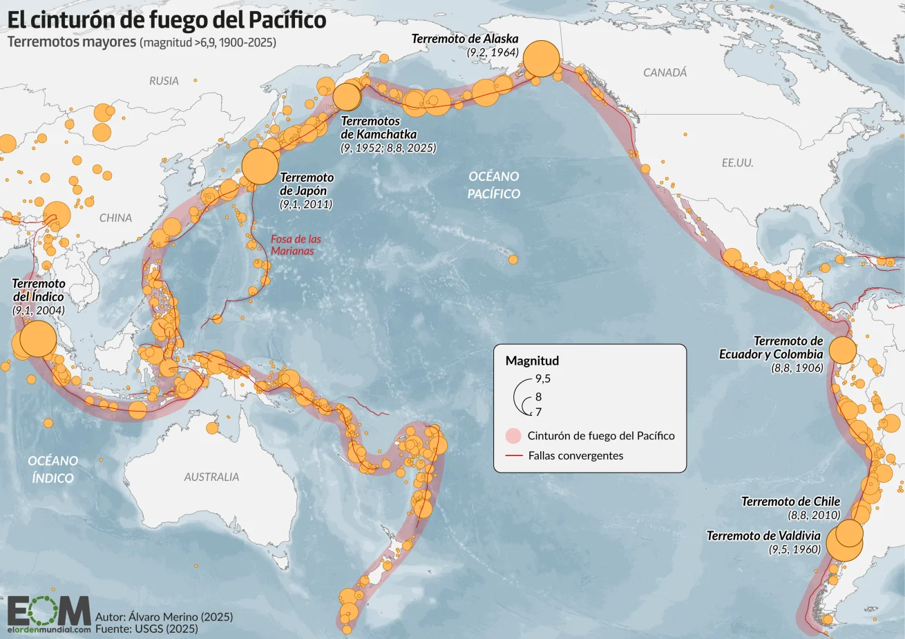

Rusia es el país más extenso del mundo, ubicado entre Europa del Este y el norte de Asia. Su vasto territorio abarca una enorme diversidad de paisajes, desde tundras heladas y bosques boreales hasta cordilleras y amplias llanuras. Es conocido por su clima mayoritariamente frío, especialmente en Siberia, donde los inviernos son extremadamente rigurosos. El país posee una gran riqueza cultural e histórica, influenciada por siglos de imperios, tradiciones eslavas y una notable herencia artística en literatura, música y arquitectura. Su capital, Moscú, es el centro político y económico, mientras que San Petersburgo destaca por su patrimonio cultural. Rusia también es un actor importante en la política global y cuenta con una economía basada en gran parte en recursos naturales como el gas, el petróleo y los minerales. Su diversidad geográfica y cultural la convierten en una nación compleja y de gran relevancia mundial. 
Rusia, aunque conocida por su vasto territorio euroasiático, también forma parte del Anillo de Fuego del Pacífico a través de su región oriental, especialmente la península de Kamchatka y las Islas Kuriles. Esta zona se encuentra sobre el borde de placas tectónicas activas, lo que provoca una intensa actividad sísmica y volcánica. Como resultado, Kamchatka es uno de los lugares con más volcanes activos del mundo y registra algunos de los terremotos más frecuentes y potentes del país, posicionando a Rusia dentro de esta gran franja sísmica global.
Los eventos que se despliegan en esta línea de tiempo no ocurren de manera aislada: forman parte del pulso constante del Anillo de Fuego del Pacífico, una gigantesca frontera tectónica que rodea el océano y concentra más del 75% de los volcanes y terremotos del planeta. En esta estructura, la placa del Pacífico se hunde bajo otras placas continentales, generando una tensión permanente que, cada cierto tiempo, se libera a través de sismos como los registrados en Kuril y Kamchatka.
La historia que aquí se presenta es, en esencia, un fragmento de ese movimiento mayor. Cada temblor es una expresión del mismo sistema que ha moldeado islas, fosas oceánicas y volcanes durante millones de años. Al observar estos eventos de forma cronológica, es posible comprender cómo la dinámica del Anillo de Fuego se manifiesta en patrones: secuencias, réplicas y reajustes que revelan la naturaleza viva de esta región.
Esta línea de tiempo, entonces, no solo organiza datos: cuenta la historia de cómo la Tierra respira bajo el Pacífico, y cómo cada liberación de energía se enlaza con un proceso tectónico global mucho más amplio.

Durante estos días se registró una intensa secuencia sísmica en la región del Pacífico Norte, especialmente frente a Severo-Kurilsk y la península de Kamchatka, dos zonas conocidas por su alta actividad tectónica. La serie comenzó con sismos moderados cerca de las Islas Kuriles, y continuó con varios eventos fuertes frente a Petropavlovsk-Kamchatsky, algunos superando magnitud 6,0. Esta concentración de movimientos en tan poco tiempo refleja el dinamismo natural de la placa del Pacífico, que constantemente se desplaza y libera energía a través de estos temblores. Aunque los epicentros se mantuvieron mar adentro y no generaron alertas mayores, la seguidilla evidencia cómo estas regiones permanecen en actividad constante debido a su ubicación en el Cinturón de Fuego, uno de los sistemas sísmicos más activos del planeta.
28 de octubre – M5.6 (Severo-Kurilsk)
El primer movimiento apareció casi en silencio, a más de 100 km mar adentro de Severo-Kurilsk. Fue un sismo moderado, de esos que no provocan alarma pero sí anuncian que las placas están inquietas.
Bajo el mar, la placa del Pacífico comenzó a deslizarse apenas un poco más de lo habitual, liberando la primera señal de que algo más grande se estaba ajustando.

03 de noviembre – M5.8 (Petropavlovsk-Kamchatsky)
Días después, la tensión volvió a sentirse, esta vez frente a Kamchatka. A 135 km de la costa, un sismo más fuerte rompió el silencio.

No fue destructivo, pero sí lo suficientemente notable como para indicar que la energía acumulada seguía buscando salida. Era como el preludio de algo mayor.
03 de noviembre – M6.1 (Petropavlovsk-Kamchatsky)
Horas más tarde, llegó el golpe principal: un sismo de magnitud 6,1 que estremeció la misma zona oceánica. Aquí, la placa del Pacífico cedió con más fuerza, provocando el mayor evento de esta secuencia.
Fue un sacudón profundo y contundente, típico de una subducción activa que lleva décadas acumulando presión.
04 de noviembre – M6.0 (Petropavlovsk-Kamchatsky, primera instancia)
Al día siguiente, la tierra volvió a hablar. Un nuevo temblor de magnitud 6,0 irrumpió casi exactamente en el mismo sector.
Este sismo no llegó solo: fue parte del reajuste que dejó el evento mayor del día anterior. La zona seguía vibrando, respondiendo a la redistribución de fuerzas dentro de la falla.
04 de noviembre – M6.0 (Petropavlovsk-Kamchatsky, segunda instancia)
Minutos u horas después, otro sismo gemelo repitió la magnitud y la ubicación, como un eco firme del anterior. La energía almacenada bajo Kamchatka no se libera de una sola vez; lo hace en pulsos.
Este fue uno de ellos: un recordatorio de que la placa aún seguía ajustándose en profundidad.
04 de noviembre – M5.7 (Severo-Kurilsk)
Ese mismo día, la actividad regresó más al norte, cerca de Severo-Kurilsk. Un M5.7 completó la secuencia, extendiendo el movimiento por toda la curva Kuril-Kamchatka.
Aunque más pequeño que los anteriores, este sismo mostraba cómo la energía se distribuía a lo largo del borde de la placa, conectando regiones que comparten la misma historia tectónica.
Actividad sísmica actual de Rusia
Durante las últimas semanas, la región Kuril–Kamchatka ha mostrado un aumento notable en su actividad sísmica, registrada a través de una serie de eventos de magnitud moderada a fuerte. Estos registros permiten observar cómo la energía acumulada en la zona de subducción —una de las más dinámicas del Cinturón de Fuego del Pacífico— se ha ido liberando en distintos momentos y ubicaciones cercanas entre sí. La siguiente tabla reúne los sismos más recientes y relevantes, ordenados por fecha, magnitud y localización. Este resumen sirve como base para comprender la evolución de la actividad actual y cómo estos eventos se relacionan entre sí dentro del comportamiento tectónico de la región.
En Rusia
| place | time | mag | tsunami |
|---|
Rusia comparando con otros países
Registros sobre 3.9 M del último mes, comparado con Japón y México
Los sismos que hemos revisado no son simplemente datos aislados: son recordatorios de que la Tierra está viva, y de que nuestra relación con ella requiere consciencia y acción. Tal como afirma Office of the United Nations for Disaster Risk Reduction (UNDRR), “los desastres no son naturales” — no basta con que ocurra un fenómeno; es la interacción entre amenaza, vulnerabilidad y capacidad lo que transforma un evento en una tragedia.
En ese sentido, nuestro análisis y línea de tiempo muestran cómo las placas tectónicas liberan energía, pero también cómo esa energía impacta en contextos humanos que pueden estar más o menos preparados. Aquí entra en juego la gestión del riesgo de desastres: en Chile y a nivel global, la normativa (por ejemplo la Ley Nº 21.364 – Sistema Nacional de Prevención y Respuesta ante Desastres) establece principios de prevención, transparencia, participación ciudadana y coordinación institucional como pilares para reducir vulnerabilidades.
Por lo tanto, al contemplar estos sismos y sus ubicaciones, magnitudes y tiempos, no solo estamos enumerando eventos: estamos construyendo un puente entre la ciencia —lo que sabemos sobre placas y subducción— y la acción —lo que podemos hacer para reducir riesgos, estar preparados, y responder eficazmente cuando la tierra se mueve.
En conclusión: Este conjunto de registros nos invita a observar con respeto lo que ocurre bajo nuestros pies, a comprender que la prevención es tan crucial como la predicción, y a fomentar una cultura de resiliencia en la que comunidades, instituciones y ciudadanos asumen su rol activo.
Solo así podemos transformar la inevitabilidad geológica en oportunidades de protección colectiva, no en tragedias evitables.
Fuentes:
Volcano Discovery https://www.volcanodiscovery.com/es/sismos/informe-sismo/22017024/mag5quake-Aug-2-2025-Russia-Kuril-Islands.html.
Earth Quake Listhttps://earthquakelist.org/news/2025/11/03/m5-8-earthquake-russia-1206104/?utm_source=chatgpt.com.
Wikimedia Commonshttps://commons.wikimedia.org/wiki/File%3A2025-11-03_Petropavlovsk-Kamchatsky%2C_Russia_M6.1_earthquake_shakemap_%28USGS%29.jpg?utm_source=chatgpt.com.
Earth Quake Listhttps://earthquakelist.org/news/2025/11/04/m6-0-earthquake-russia-1206423/?utm_source=chatgpt.com.
Volcano Discoveryhttps://www.volcanodiscovery.com/es/sismos/informe-sismo/22355417/mag5quake-Nov-4-2025-Russia-Kuril-Islands.html.